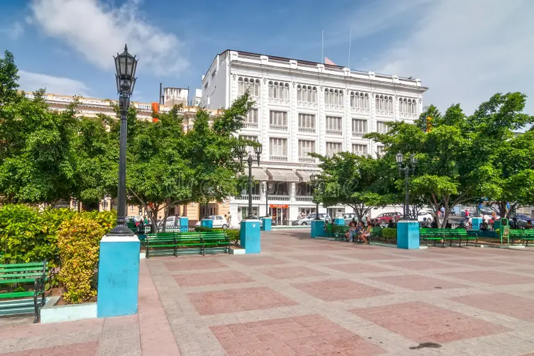

Centro Histórico
Parque Céspedes
El corazón palpitante de Santiago de Cuba. Rodeado por la Catedral, el Ayuntamiento y la Casa de Diego Velázquez, es el punto de encuentro por excelencia de santiagueros y visitantes. Déjese envolver por el bullicio, la música y el aroma del café que se respira en sus alrededores.